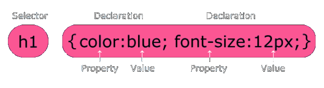
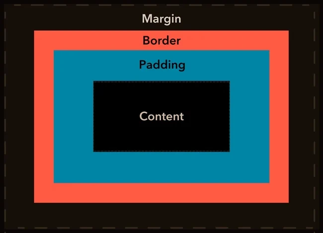
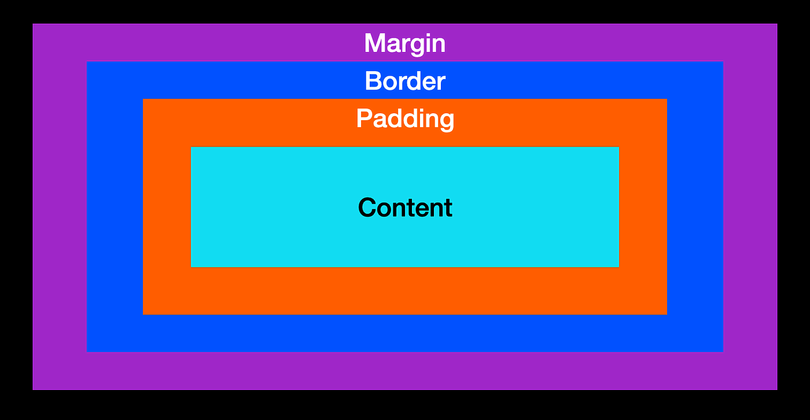
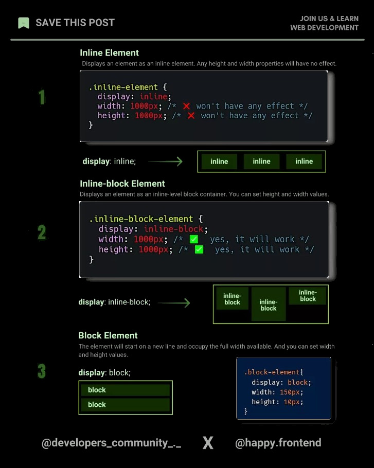
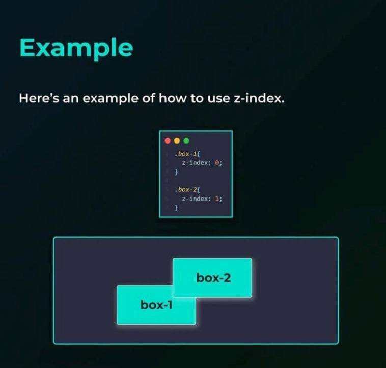
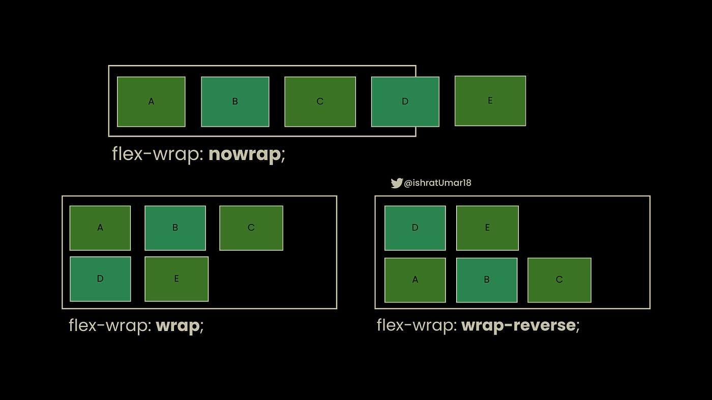
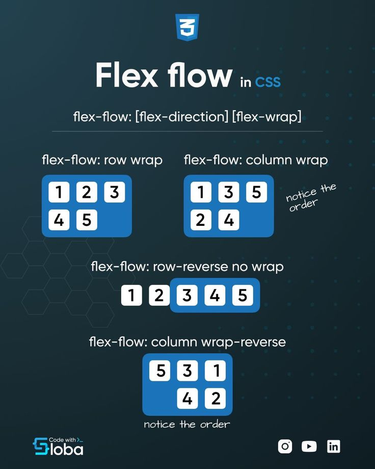
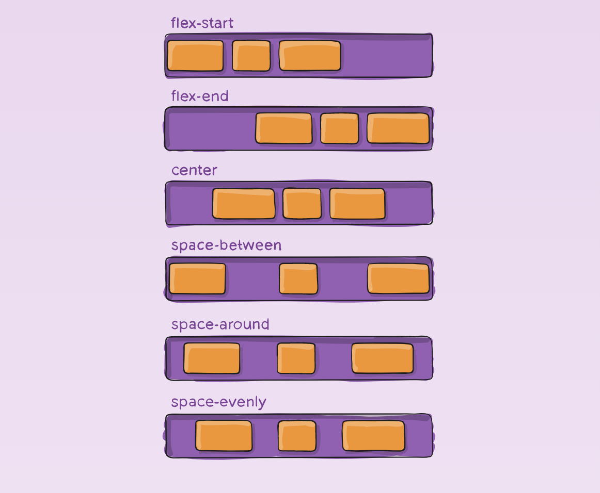
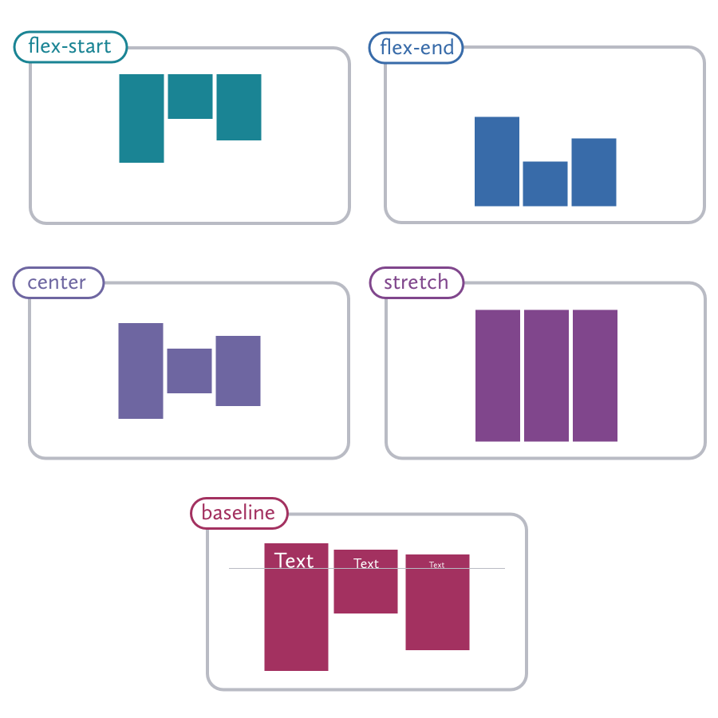
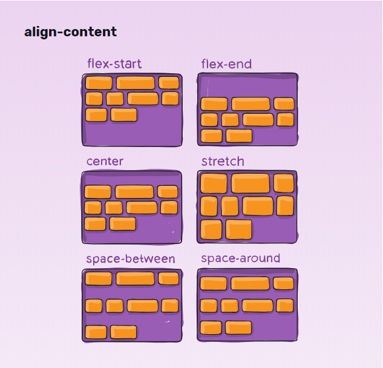

CCS - How to CSS
CSS toevoegen:
Externe CSS:
Met een extern stylesheet kun je het uiterlijk van een hele website veranderen door slechts één bestand te
wijzigen!
Elke HTML-pagina moet een verwijzing bevatten naar het externe stijlbladbestand in het -element,
in de head-sectie.
Een extern stijlblad kan in elke teksteditor worden geschreven en moet worden opgeslagen met de extensie
“css”
Voorbeeld Externe CSS:
index.html:
<!DOCTYPE
html>
<html lang="en">
<head
>
<meta
charset="UTF-8">
<meta
name="viewport"
content="width=device-width,
initial-scale=1.0">
<title
> example </title>
<link
rel="stylesheet"
href="./style.css">
</head>
<body>
<p
>
Your code </p>
</body>
</html>
style.css:
Interne CSS:
Er kan een intern stylesheet worden gebruikt als één enkele HTML-pagina een unieke stijl heeft.
De interne stijl wordt gedefinieerd in het style element, in de head-sectie.
Voorbeeld Interne CSS:
index.html:
<!DOCTYPE
html>
<html lang="en">
<head
>
<meta
charset="UTF-8">
<meta
name="viewport"
content="width=device-width,
initial-scale=1.0">
<title
> example </title>
<style
type= "text/css">
p {
color: red;}
</style>
</head>
<body>
<p
>
Your code </p>
</body>
</html>
Inline-CSS:
Een inline-stijl kan worden gebruikt om een unieke stijl voor een enkel element toe te passen.
Om inline stijlen te gebruiken, voegt u het stijlattribuut toe aan het relevante element. Het stijlkenmerk
kan elke CSS-eigenschap bevatten.
Voorbeeld Inline-CSS:
Inline-stijlen worden gedefinieerd binnen het attribuut "style" van het relevante element:
index.html:
<!DOCTYPE
html>
<html lang="en">
<head
>
<meta
charset="UTF-8">
<meta
name="viewport"
content="width=device-width,
initial-scale=1.0">
<title
> example </title>
</head>
<body>
<p
style="color:
red;">
Your code </p>
</body>
</html>
Tip: Een inline stijl verliest veel van de voordelen van een stylesheet (door inhoud te combineren met
presentatie). Gebruik deze methode spaarzaam.
CSS is de taal die we gebruiken om een webpagina op te maken.
Wat is CSS?
- CSS staat voor Cascading Style Sheets.
- CSS beschrijft hoe HTML-elementen moeten worden weergegeven op
het scherm, op papier of in andere media.
- CSS bespaart veel werk. Het kan de lay-out van meerdere webpagina's
tegelijk beheren.
- Externe stylesheets worden opgeslagen in CSS-bestanden.
Een CSS-regel bestaat uit een selector en een declaratieblok.
CSS-syntaxis

De selector wijst naar het HTML-element dat u wilt opmaken.
Het declaratieblok bevat een of meer declaraties, gescheiden door
puntkomma's.
Elke declaratie bevat een CSS-eigenschapsnaam en een waarde, gescheiden
door een dubbele punt.
Meerdere CSS-declaraties worden gescheiden door puntkomma's, en
declaratieblokken worden omgeven door accolades.
Voorbeeld:
In dit voorbeeld worden alle p-elementen gecentreerd uitgelijnd, met een
rode tekstkleur:
Voorbeeld uitgelegd
- p is een selector in CSS (deze verwijst
naar het HTML-element dat u
wilt opmaken: p).
- Color is een eigendom en redis de waarde van het onroerend goed.
- Text-align is een eigendom en center is de waarde van het onroerend
goed.
Een CSS-selector selecteert de HTML-elementen die u wilt opmaken:
CSS - Selectors
- - selecteert HTML-elementen op basis van de elementnaam.
Voorbeeld
Hier worden alle p-elementen op de pagina gecentreerd uitgelijnd, met
een rode tekstkleur:
The CSS id Selector
De id-selector gebruikt het id-attribuut van een HTML-element om een
specifiek element te selecteren.
De id van een element is uniek binnen een pagina, dus de id-selector wordt
gebruikt om één uniek element te selecteren!
Om een element met een specifieke id te selecteren, schrijft u een hekje (#),
gevolgd door de id van het element.
Voorbeeld
De onderstaande CSS-regel wordt toegepast op het HTML-element met
id="para1":
The CSS class Selector
De klassenkiezer selecteert HTML-elementen met een specifiek
klassenattribuut.
Om elementen met een specifieke klasse te selecteren, schrijft u een punt (.)
gevolgd door de klassenaam.
Voorbeeld
In dit voorbeeld zijn alle HTML-elementen met class="center" rood en
gecentreerd:
U kunt ook opgeven dat alleen specifieke HTML-elementen door een klasse
moeten worden beïnvloed.
Voorbeeld
In dit voorbeeld zijn alleen p elementen met
class="center" rood en gecentreerd:
HTML-elementen kunnen ook naar meer dan één klasse verwijzen.
Voorbeeld
In dit voorbeeld wordt het
-element opgemaakt volgens class="center"
en class="large":
<p class="center large"> This paragraph refers to two classes.
</p>
Let op: Een klassenaam kan niet beginnen met een cijfer!
De CSS Universele Selector
De universele selector (*) selecteert alle HTML-elementen op de pagina.
Voorbeeld
De onderstaande CSS-regel heeft invloed op elk HTML-element op de pagina:
| Selector |
Voorbeeld |
voorbeeld beschrijving |
| #id |
#firstname |
Selects the element with id="firstname" |
| .class |
.intro |
Selects all elements with class="intro" |
| element.class |
p.intro |
Selects only p elements with class="intro" |
| * |
* |
Selects all elements |
| element |
p |
Selects all p elements |
| element,element... |
div, p |
Selects all div elements and all p
elements |
CSS - Comments
CSS-opmerkingen worden niet weergegeven in de browser, maar kunnen wel
helpen bij het documenteren van uw broncode.
Een CSS-opmerking begint met /*en eindigt met */
Kleuren worden gespecificeerd met behulp van vooraf gedefinieerde kleurnamen
of RGB-, HEX-, HSL-, RGBA- en HSLA-waarden.
CSS-Kleuren
CSS-kleurnamen
In CSS kan een kleur worden opgegeven door een vooraf gedefinieerde
kleurnaam te gebruiken:
CSS/HTML ondersteunt 140 standaard kleurnamen
CSS-kleurwaarden
In CSS kunnen kleuren ook worden opgegeven met behulp van RGBwaarden, HEX-waarden, HSL-waarden, RGBA-waarden
en HSLA-waarden:
Voorbeeld voor “Tomato”:
- Rgb(255, 99, 71)
- #ff6347
- Hsl(9, 100%, 64%)
Hetzelfde als de kleurnaam "Tomato", maar 50% transparant:
RGBA(255, 99, 71, 0.5)
www.quackit.com
Hier kan je een tabel
vinden met Colors names en codes
Met CSS borders kunt u de stijl, breedte en kleur van de rand van een element
opgeven.
CSS-randstijl
De border-style eigenschap specificeert welk soort rand moet worden
weergegeven.
De volgende waarden zijn toegestaan:
- dotted- Definieert een gestippelde rand
- dashed- Definieert een stippellijnenrand
- solid- Definieert een stevige rand
- double- Definieert een dubbele rand
-
groove- Definieert een 3D-gegroefde rand. Het effect is afhankelijk van
de randkleurwaarde
-
ridge- Definieert een 3D-geribbelde rand. Het effect is afhankelijk van
de randkleurwaarde
-
inset- Definieert een 3D-inzetrand. Het effect is afhankelijk van de
randkleurwaarde
-
outset- Definieert een 3D-beginrand. Het effect is afhankelijk van de
randkleurwaarde
- none- Definieert geen grens
- hidden- Definieert een verborgen rand
Border-style:
Om een element een border te geven, geef
je eerst aan wat voor lijn je wilt hebben. Dit
geef je aan met de property: border-style
Je kunt een hele lijst aan values kiezen,
maar de meest gebruikten zijn: solid,
dashed en dotted.
Solid houdt in dat je een solide lijn trekt, oftewel een normale niet onderbroken lijn.
Border-width
Naast de style, moet je ook aangeven hoe dik je de lijn wilt hebben.
Dit doe je met de property: border-width
Border-color
En als laatste geef je aan welke kleur de lijn moet zijn.
Dit doe je met de property: border-color
Alles bij elkaar zijn het drie regels code om een lijntje om een element te trekken. Dat kan ook korter:
⭣
Border-radius
Je kunt de randen van een border ook rond maken. Hiervoor gebruik
je de property: border-radius
Border-sides
Uiteraard is het ook mogelijk om alleen aan de linker, rechter, boven
of onderkant een lijn te plaatsen. Hoe je dit moet doen kun je in de volgende voorbeeld
zien:
CSS Units
In de afgelopen weken heb je al een klein
beetje met CSSS gewerkt. Dan heb je vast
gezien dat overal px (dat staat voor pixels)
wordt gebruikt om aan te geven hoe groot
iets moet zijn. Dit noemen we: units
Naast px hebben we ook de units:
Unit: px
Px blijven altijd dezelfde grootte,
wat er ook met je scherm gebeurt.
16px blijft altijd 16px.
Unit: rem
Rem: rem staat gelijk aan de root. De
root is de browser die je gebruikt.
Als default heeft jouw browser 16px.
Stel dat iemand de font size in zijn
browser (bijvoorbeeld slechtziend)
aanpast, dan past de font zich aan en
wordt ook groter.
Dit zorgt ervoor dat je website
responsive wordt.
Tip: rem wordt het meest gebruikt
Tip 2: geen px meer gebruiken ;)
CSS-Backgrounds
Je kunt in CSS je achtergrond een kleur geven.
Hiervoor gebruik je de property: background-color:
Je kunt in CSS op je achtergrond een afbeelding plaatsen.
Hiervoor gebruik je de property: backgroundimage.
De code ziet er dan als volgt uit:
In de url(“ ”) plaats de bestandsnaam van je afbeelding
Background-repeat
Bij default staat de property background-image
op repeat. Dit betekent wanneer jij een kleine
afbeelding hebt als achtergrond, deze zich
herhaalt zodat het hele scherm wordt gevuld.
Wil je dit niet (logisch!) dan gebruik je de property: background-repeat
Background-size
De property background-repeat zorgt er niet voor dat
heel het scherm gevuld is met één afbeelding.
In het vorige voorbeeld hebben we verwijderd dat de
afbeelding zich herhaalt, maar nu ziet het scherm
eruit als de afbeelding

Om ervoor te zorgen dat de afbeelding het hele
scherm vult, gebruik je de property: background-size
Background-position
Als laatst zorgen we er nog voor dat de afbeelding
gecentreerd staat, zodat je niet alleen het bovenste
gedeelte van de afbeelding ziet maar echt vanuit het
midden.
Hiervoor gebruik je de property: background-position
CSS-Margins and paddings

Padding
-
Padding creert ruimte in het element zelf, alles wat
tussen de content en de border zit.
-
Een border is onzichtbaar, maar je kunt het ook aantonen:
border: 2px solid black
-
Om rondom ruimte te creëren in het element
gebruik je de volgende code:
CSS-Hoogte & Breedte
De CSS height en width eigenschappen worden gebruikt om de hoogte en
breedte van een element in te stellen.
De eigenschappen height en width kunnen de volgende waarden hebben:
- auto- Dit is standaard. De browser berekent de hoogte en breedte.
- length- Definieert de hoogte/breedte in px, cm, etc.
- %- Definieert de hoogte/breedte in procenten van het bevattende blok.
- initial- Stelt de hoogte/breedte in op de standaardwaarde.
- inherit- De hoogte/breedte wordt overgenomen van de bovenliggende
waarde
Voorbeeld
Stel de hoogte en breedte van een div element in:
CSS-Box model
- Omschrijft het omliggende gedeelte van een
element.
- Kun je zien door je element te inspecteren in
de browser (rechts klikken > inspecteren).
- Content: de inhoud van het vak, waar tekst en
afbeeldingen verschijnen.
- Padding : maakt een gebied rond de inhoud leeg.
De opvulling is transparant.
- Border : een rand die rond de inhoud en
opvulling gaat.
- Margin: maakt een gebied buiten de rand vrij. De
marge is transparant.

CSS-Links
Met CSS kunnen links op veel verschillende manieren worden opgemaakt.
Links kunnen worden opgemaakt met elke CSS-eigenschap (bijv color.
, font-family, background, enz.).
Bovendien kunnen links anders worden vormgegeven, afhankelijk van
de staat waarin ze zich bevinden.
De vier koppelingsstatussen zijn:
- a:link- een normale, niet-bezochte link.
- a:visited- een link die de gebruiker heeft bezocht.
- a:hover- een link wanneer de gebruiker erover beweegt
- a:active- een link op het moment dat erop wordt geklikt
Voorbeeld
!! Bij het instellen van de stijl voor verschillende linkstatussen zijn er enkele
volgorderegels:
a:hover MOET na a:link en a:visited komen
a:active MOET na a:hover komen
Tekstdecoratie
De text-decoration eigenschap wordt meestal gebruikt om onderstrepingen
van links te verwijderen:
Tip: Dat gebruik je meestal voor jouw navbar!
CSS-lijst
In HTML zijn er twee hoofdtypen lijsten:
- ongeordende lijsten (ul) - de lijstitems
zijn gemarkeerd met opsommingstekens
- geordende lijsten (ol) - de lijstitems
zijn gemarkeerd met cijfers of
letters
Ordered List:
- Coffee
- Tea
- Coca Cola
HTML: ol
CSS: list-style-type kan worden gebruikt om het type numeratie te kiezen.
Unordered List:
HTML: ul
CSS: list-style-type wordt gebruikt om het type opsommingsteken te bepalen.
Lijstpuntstijlen aanpassen:
list-style-type kan worden aangepast voor verschillende stijlen.
Hier is een lijst met verschillende ‘list-style-type’ values:
| Value |
Description |
| disc |
Standaardwaarde. De marker is een gevulde cirkel. |
| armenian |
De marker heeft traditionele Armeense nummering. |
| circle |
De marker is een cirkel. |
| cjk-ideographic |
De marker is gewoon ideografische cijfers. |
| decimal |
De marker is een getal. |
| decimal-leadingzero |
De marker is een nummer met voorloopnullen (01, 02, 03, enzovoort). |
| georgian |
De marker is traditioneel Georgisch genummerd. |
| hebrew |
De marker is traditionele Hebreeuwse nummering. |
| hiragana |
De marker is traditioneel Hiragana-nummering. |
| hiragana-iroha |
De marker is traditioneel Hiragana iroha-nummering. |
| katakana |
De marker heeft traditionele Katakana-nummering. |
| katakana-iroha |
De marker heeft een traditionele Katakana iroha-nummering. |
| lower-alpha |
De marker is in kleine letters (a, b, c, d, e, enzovoort). |
| lower-greek |
De marker is in het Grieks geschreven met kleine letters. |
| lower-latin |
De marker gebruikt kleine letters in het Latijnse alfabet (a, b, c, d, e, enz.). |
| lower-roman |
De marker is in kleine romeinse cijfers (i, ii, iii, iv, v, enz.). |
| none |
Er wordt geen marker getoond. |
| square |
De marker is een vierkant. |
| upper-alpha |
De marker is in hoofdletters (A, B, C, D, E, enz.). |
| upper-greek |
De marker is in hoofdletters Grieks. |
| upper-latin |
De marker is in hoofdletters Latijns (A, B, C, D, E, enz.) |
| upper-roman |
De marker gebruikt hoofdletters Romeins (I, II, III, IV, V, enz.). |
| initial |
Zet deze eigenschap terug naar de standaardwaarde. |
| inherit |
Deze eigenschap erft het van zijn parent-element. |
Lijststijl verwijderen:
list-style kan worden gebruikt om alle stijlen te verwijderen:
CCS-Tabellen
Gebruik de eigenschap om tabelranden in CSS op te geven border.
Het onderstaande voorbeeld specificeert een ononderbroken rand voor
table-, th- en td-elementen:
| Voornaam |
Achternaam |
| Petrus |
Griffioen |
| Loïs |
Griffioen |
De bovenstaande tabel lijkt in sommige gevallen misschien klein. Als je een
tabel nodig hebt die het hele scherm (volledige breedte) moet beslaan, voeg
dan width: 100%aan het table element toe:
| Voornaam |
Achternaam |
| Petrus |
Griffioen |
| Loïs |
Griffioen |
Dubbele grenzen
Merk op dat de tabel in de bovenstaande voorbeelden dubbele randen
heeft. Dit komt omdat zowel de tabel als de th- en td-elementen
afzonderlijke randen hebben.
Bekijk het onderstaande voorbeeld om dubbele randen te verwijderen.
De border-collapseeigenschap bepaalt of de tabelranden moeten worden
samengevouwen tot één enkele rand:
| Voornaam |
Achternaam |
| Petrus |
Griffioen |
| Loïs |
Griffioen |
CSS-Display
De display eigenschap is de belangrijkste CSS-eigenschap voor het regelen van
de lay-out.
De weergave-eigenschap
De display eigenschap wordt gebruikt om aan te geven hoe een element op
een webpagina wordt weergegeven.
Elk HTML-element heeft een standaardweergavewaarde, afhankelijk van het
type element. De standaardweergavewaarde voor de meeste elementen
is block of inline.
De display eigenschap wordt gebruikt om het standaardweergavegedrag van
HTML-elementen te wijzigen.
Elementen op blokniveau
Een element op blokniveau begint ALTIJD op een nieuwe regel en neemt de
volledige beschikbare breedte in beslag (strekt zich zo ver mogelijk naar links
en rechts uit).
Het div-element is een element op blokniveau.
Voorbeelden van elementen op blokniveau:
- div
- h1-h6
- p
- form
- header
- footter
- section
Inline-elementen
Een inline-element begint NIET op een nieuwe regel en neemt slechts de
breedte in beslag die nodig is.
Dit is een inline span-element binnen een alinea.
Voorbeelden van inline-elementen:
Kijk deze afbeelding voor meer duidelijkheid:

Kijk hier voor alle waarden van CSS display:
w3schools
CSS-Posities
De position eigenschap specificeert het type positioneringsmethode dat voor
een element wordt gebruikt.
Er zijn vijf verschillende positiewaarden:
- static
- relative
- fixed
- absolute
- sticky
Elementen worden vervolgens gepositioneerd met behulp van de
eigenschappen boven, onder, links en rechts. Deze eigenschappen werken
echter alleen als de position eigenschap eerst wordt ingesteld. Ze werken ook
anders, afhankelijk van de positiewaarde.
Static:
HTML-elementen zijn standaard statisch gepositioneerd.
Statisch gepositioneerde elementen worden niet beïnvloed door de
eigenschappen boven, onder, links en rechts.
Een element met position: static;is niet op een speciale manier
gepositioneerd; het wordt altijd gepositioneerd volgens de normale voortgang
van de pagina
Een element met position: static kan niet manipuleerd zijn . In deze positie
kan het element niet vrij worden verplaatst met behulp van de
eigenschappen :top, right, bottom en left.
Relative:
Een element met position: relative;is gepositioneerd ten opzichte van zijn
normale positie.
Als je een HTML-element hebt en je zet position: relative; op dat
element met CSS, betekent dat je het element een beetje kunt
verschuiven vanaf de positie waar het normaal gesproken zou staan,
maar zonder de rest van de pagina te beïnvloeden.
Je kunt deze verschuiving doen met de eigenschappen top, right,
bottom en left!
Het belangrijkste om te onthouden is dat met position: relative; je
het element een beetje kunt bewegen, maar de ruimte om het
element heen blijft hetzelfde, alsof er een leeg plekje is gereserveerd
waar het element normaal zou staan.
Fixed:
Als je een HTML-element hebt en je zet position: fixed; op dat element met
CSS, betekent dit dat het element op een specifieke plek op het scherm blijft,
zelfs als je naar beneden of naar boven scrolt op de pagina.
Met position: fixed; kun je dus elementen maken die 'vast' op het scherm
blijven, waardoor ze handig zijn voor bijvoorbeeld navigatiebalken die altijd
bovenaan de pagina zichtbaar moeten zijn, ongeacht hoe ver je naar beneden
scrolt. Je kunt deze positie aanpassen met de eigenschappen top, right, bottom
en left.
Absolute:
Als je position: absolute; op een HTML-element toepast met CSS,
betekent dit dat het element wordt gepositioneerd ten opzichte van
het dichtstbijzijnde voorouderlijke (bovenliggende) element dat een
positie heeft anders dan static. Als er geen dergelijk element is, wordt
het element gepositioneerd ten opzichte van het documentvenster.
Belangrijk is dat elementen met position: absolute; niet de normale
ruimte in de pagina innemen. Met andere woorden, andere
elementen worden niet beïnvloed alsof het absolute gepositioneerde
element er niet is. Dit kan handig zijn voor overlappende elementen
of het positioneren van elementen op specifieke plaatsen in je layout. ( denk aan footer)
Sticky:
Als je position: sticky; op een HTML-element toepast met CSS,
betekent dit dat het element zich als relative gedraagt totdat het een
bepaalde scrollpositie bereikt. Op dat moment wordt het element
fixed en blijft het op zijn plaats zolang je door de pagina scrolt.
hier is een goed video met meer uitleg over CSS position:
youtube video
Z-index:
z-index is een CSS-eigenschap die wordt gebruikt om de stapelvolgorde van
elementen op een webpagina te bepalen. Het regelt welk element zich
bovenop andere elementen bevindt wanneer ze elkaar overlappen op de z-as
(die zich vanaf het scherm naar jou toe uitstrekt).
Hier is een eenvoudige uitleg:
-
Elk HTML-element is als een kaart opgestapeld, en z-index bepaalt de volgorde van deze kaarten.
- Hoe hoger de z-index-waarde, hoe meer naar voren het element in de
stapel komt.
- Elementen zonder een expliciet gedefinieerde z-index hebben
automatisch een z-index van auto, wat betekent dat ze standaard onder
elementen met een expliciet gedefinieerde z-index komen.

CSS-Flexbox
Flexbox is een lay-outmodel in CSS dat het eenvoudig maakt om elementen
binnen een container te ordenen en uit te lijnen, zelfs als hun grootte variabel is
of onbekend is. Flexbox is handig voor het creëren van complexe lay-outs en het
centreren van elementen op een webpagina.
Om het Flexbox-model te kunnen gebruiken, moet u eerst een flexcontainer
definiëren.
De flexcontainer wordt flexibel door de displayeigenschap in te stellen
op flex:
Voorbeeld:
De eigenschappen van de flexcontainer zijn:
- flex-direction
- flex-wrap
- flex-flow
- justify-content
- align-items
- align-content
flex-direction:

De flex-direction eigenschap definieert in welke richting de container de
flexartikelen wil stapelen.
- row: Elementen worden geplaatst in dezelfde richting als deze van de
tekst.
- row-reverse: Elementen worden geplaatst in de tegenovergestelde
richting van de tekst.
- column: Elementen worden onder elkaar geplaatst.
- column-reverse: Elementen worden boven elkaar geplaatst.
Voorbeeld:
.flex-container {
display: flex;
flex-direction: row; /* Kan ook zijn: column, row-reverse, column-reverse */
}
flex-wrap:

De flex-wrap eigenschap geeft aan of de
flexartikelen
wel of niet moeten worden verpakt.
- nowrap: Alle elementen worden samengepakt op een enkele lijn.
- wrap: Elementen worden over meerdere lijnen gewikkeld.
- wrap-reverse: Elementen worden over meerdere lijnen in omgekeerde
richting gewikkeld.
Flex-flow:
De flex-flow eigenschap is een verkorte eigenschap voor het instellen van zowel de eigenschappen
flex-direction als flex-wrap.

Voorbeeld:
.flex-container {
display: flex;
flex-flow: row wrap; /* Eerste waarde voor flex-direction, tweede voor flexwrap
*/
}
Justify-content:
justify-content bepaalt hoe de flex-items langs de hoofdas worden verdeeld:
Deze CSS eigenschap lijnt elementen horizontaal uit, en aanvaard de volgende waarden:
- flex-start: Elementen aan de linkerkant van de container uitlijnen.
- flex-end: Elementen aan de rechterkant van de container uitlijnen.
- center: Elementen in het midden van de container uitlijnen.
- space-between: Elementen opstellen gelijkmatig verdeeld over de as.
- space-around: Elementen opstellen met gelijke ruimte aan de
buitenkanten op de as.

Voorbeeld:
.flex-container {
display: flex;
justify-content: flex-start; /* Kan ook zijn: flex-end,
center, space-between, spacearound, space-evenly */
}
Align-items:
Align-items bepaalt hoe de flex-items langs de dwarsas worden uitgelijnd.
Deze CSS eigenschap lijnt elementen verticaal uit, en aanvaard de
volgende waarden:
- flex-start: Elementen worden uitgelijnd naar de bovenkant van de
container
- flex-end: Elementen worden uitgelijnd naar de onderkant van de
container.
- center: Elementen worden uitgelijnd op het verticaal middelpunt van de
container.
- baseline: Elementen worden uitgelijnd op de basislijn van de container.
- stretch: Elementen worden uitgerokken om binnen de container te
passen.

Voorbeeld:
.flex-container {
display: flex;
align-items: stretch; /* Kan ook zijn: flex-start, flex-end, center, baseline */
}
Align-content:
De align-content eigenschap wordt gebruikt om de flexlijnen uit te lijnen:
Deze eigenschap aanvaard de volgende waarden:
- flex-start: Lijnen worden aan de bovenzijde van de container verpakt.
- flex-end: Lijnen worden aan de onderzijde van de container verpakt.
- center: Lijnen worden op het verticale center van de container verpakt.
- space-between: Lijnen worden gedistribueerd over de volledige dimensie
en krijgen een gelijke spatiëring tussen elke lijn.
- space-around: Lijnen worden gedistribueerd over de volledige dimensie
en krijgen een gelijke spatiëring rond elke lijn.
- stretch: Lijnen worden uitgerokken om in de container te passen.
Dit kan verwarrend overkomen, maar align-content bepaald de spatiëring
tussen lijnen, terwijl align-items de opstelling van alle items binnen de
container bepaald. Als er slechts een lijn is, heeft align-content geen effect.

Voorbeeld:
.flex-container {
display: flex;
flex-wrap: wrap; /* Moet worden ingesteld voor aligncontent om effect te hebben */
align-content: space-between; /* Kan ook zijn: flexstart, flex-end, center, space-around, space-evenly */
}
CSS-Media queries
Wat zijn Media Queries?
Media queries zijn CSS-technieken waarmee je de stijl van een webpagina kunt aanpassen op
basis van kenmerken zoals schermgrootte, apparaattype en schermresolutie.
Waarom Media Queries?
Om een website responsief te maken, zodat deze er goed uitziet en goed presteert op
verschillende apparaten en schermformaten.
Hoe Gebruik je Media Queries?
Gebruik de @media-regel in je CSS om specifieke stijlen toe te passen binnen een bepaalde
voorwaarde.
Let op! Media Queries altijd ONDERAAN in je CSS bestand.
Voorbeeld van een Basis Media Query:
In dit voorbeeld verkleinen we de tekstgrootte op schermen die maximaal 600
pixels breed zijn.
Max-width:
-
max-width wordt gebruikt om aan te geven dat de stijlen van toepassing
moeten zijn zolang de schermgrootte kleiner is dan of gelijk is aan de
opgegeven waarde.
-
Het is handig om stijlen toe te passen op kleinere schermen, zoals
telefoons of tablets.
Min-width:
-
min-width wordt gebruikt om aan te geven dat de stijlen van toepassing
moeten zijn zolang de schermgrootte groter is dan of gelijk is aan de
opgegeven waarde.
-
Het wordt vaak gebruikt om stijlen toe te passen op grotere schermen,
zoals desktops.
TIP:
DESKTOP: @media screen and (min-width:1024px){…}
TABLET: @media screen and (min-width:768px) and (maxwidth:1023px) {…}
SMARTPHONE: @media screen and (max-width:767px){..}
Media Types:
- All: Default. Gebruik je voor alle media type apparaten.
- Print: Gebruik je voor printers.
- Screen: Gebruik je voor desktop, tablet en mobile.
- Speech: gebruik je voor schermlezers die voorlezen wat op het scherm
staat.